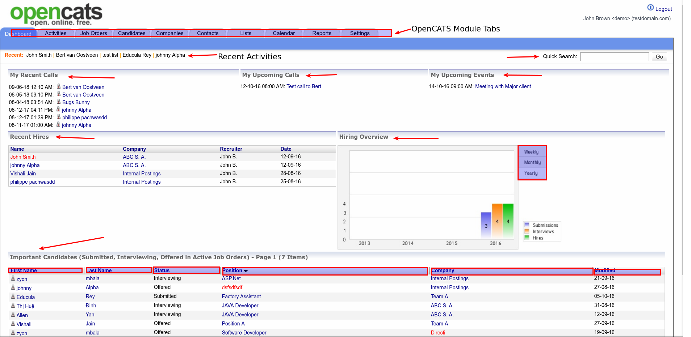
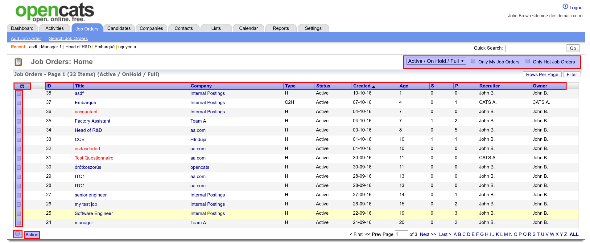

Screens In-Depth¶
In this section, we will go through each of the OpenCATS screens in depth and go over all of the various functions.
OpenCATS dashboard/home screen¶
Note
The OpenCATS dashboard (home screen) is broken up into three rows at the top and a grid of six sections below.
- The main OpenCATS module tabs: The main navigation tabs.
- Recent: Your five most recently viewed candidates/contacts. Names are clickable for quick access.
- Quick Search: Search for candidate/contact name, job title, and Company name
- My Recent Calls: Most recent candidate/contact calls. Names are clickable for quick access.
- My upcoming calls: List of upcoming, scheduled calls, IF scheduled in OpenCATS.
- My upcoming events: List of upcoming, scheduled calls, IF scheduled in OpenCATS.
- Recent Hires: Short list of your company’s most recent hires
- Hiring Overview: Overview of submission/interviews/hires. You can select weekly, monthly or yearly tabs on the right
- Important Candidates: Small overview of some recent candidate activity. The columns in this section are adjustable by dragging the column title left or right.
Activities Screen¶

The activities screen gives you an overview of recent candidate, company and contact activities.
Note
The rows at the top always stay the same in OpenCATS (Main navigation tabs, recent, and quick search). We won’t cover that again in the documentation.
- Time-frame of results: Click these to filter your results by day, week, month, etc.
- Rows per page: Click the drop-down bar to change the amount of results per screen. 15, 30, 50, or 100
- Filter: Options to filter results by Date, Regarding, Activity, Notes, Entered By
- Activity columns:
- Show Columns: Select which columns to be visible in the activities grid
- Rearrange Columns: Columns can be moved left and right by grabbing the column name and moving it left or right.
- Sort Columns: Each column can also be sorted alphabetically by clicking the column title at the top of the column.
Job Orders Screen¶
The Job Orders screen is job order specific. It is where all the job orders are.
Note
The job order screen is structured similarly to the Activities screen. So we won’t go through the same features again.
In the top, right, highlighted row, we have the following:
- Active/On Hold/Full Drop-down box: This allows you to filter your results based on the status of the job order. Options are:
Active/On Hold/Full,Active,On Hold/Full,Closed/Canceled,Upcoming/Lead,ALL. - Only My Job Orders: This will return results that are only your job orders.
- Only Hot Job Orders: This will return results that are only marked as Hot Jobs.
Show Columns (highlighted box, upper right corner of grid):
There are quite a few options here to select or deselect. The checked options will include in the job order screen information. See image below.

Note
As with the other screens, all columns can be moved left and right, as well as sorted alphabetically.
The last thing to note on the Job order screen is the action button in the bottom left corner.
- Action:
- Clicking the action button will allow you to export results to a .csv sheet, or import results to a hot-list within the OpenCATS system. We will go into those further later in the documentation.
- Add specified job orders to an OpenCATS Hot-list, or export them to a CSV:
- Select the checkbox (next to
action), this will select all the boxes on this screen only. - Manually select specified candidates
- Then
exportoradd to listand clickselected.
- Select the checkbox (next to
- OR:
- select
actionthenadd to listorexportand selectallto include the entire database (in this case, it would include ALL of the job orders in your OpenCATS system) in your hot-list or CSV export.
- select
Candidates Screen¶

The main Candidates screen is laid out similarly to the others.
There are two checkboxes in upper right for filtering the results on this screen. Only My Candidates and Only Hot Candidates.
Again, there are additional options below that with the Rows Per Page dropdown and the Filter dropdown.
As before, the columns can be moved right and left by dragging the column title word at the top, and columns can be added or removed by the Show Columns (Image of a grid) in the upper left corner of the main section of the candidates screen. See example below.

There are different options for candidates in the Action button at the bottom left. You can select specific candidates, the candidates showing on the screen, or all of the candidates in OpenCATS and Add to List, Add To Pipeline, Send E-Mail, or Export.
- Add to List: Add to a hotlist
- Add To Pipeline: Add to a job order pipeline
- Send E-Mail: Means type your own email to candidate(s) or use an OpenCATS template.
- Export: Export selected candidates to a csv file.
Companies Screen¶
The main Companies page is very similar to the Candidates page. everything functions the same, and it has the same options.
The only exception is that there are differe columns available to choose in the Show Columns button. See image below.